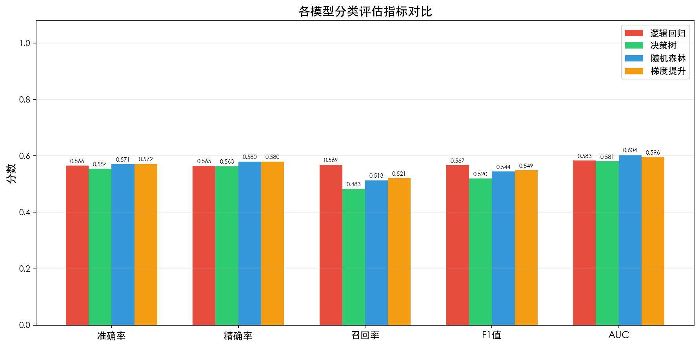
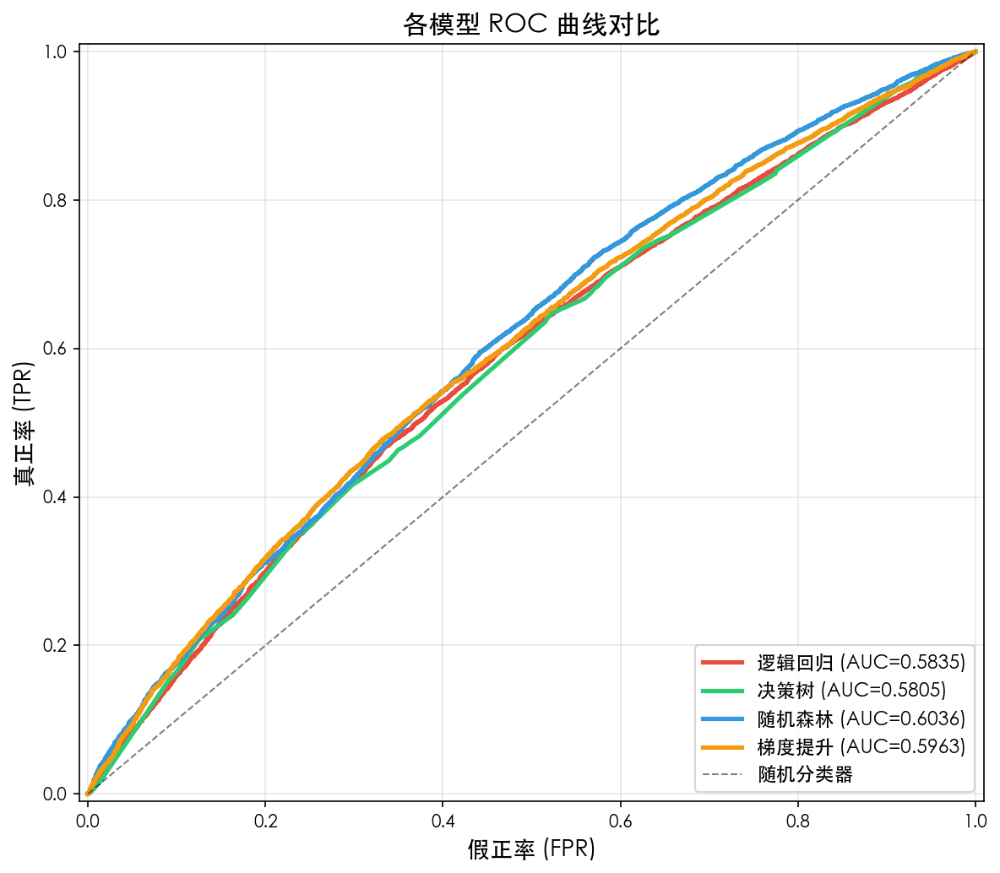
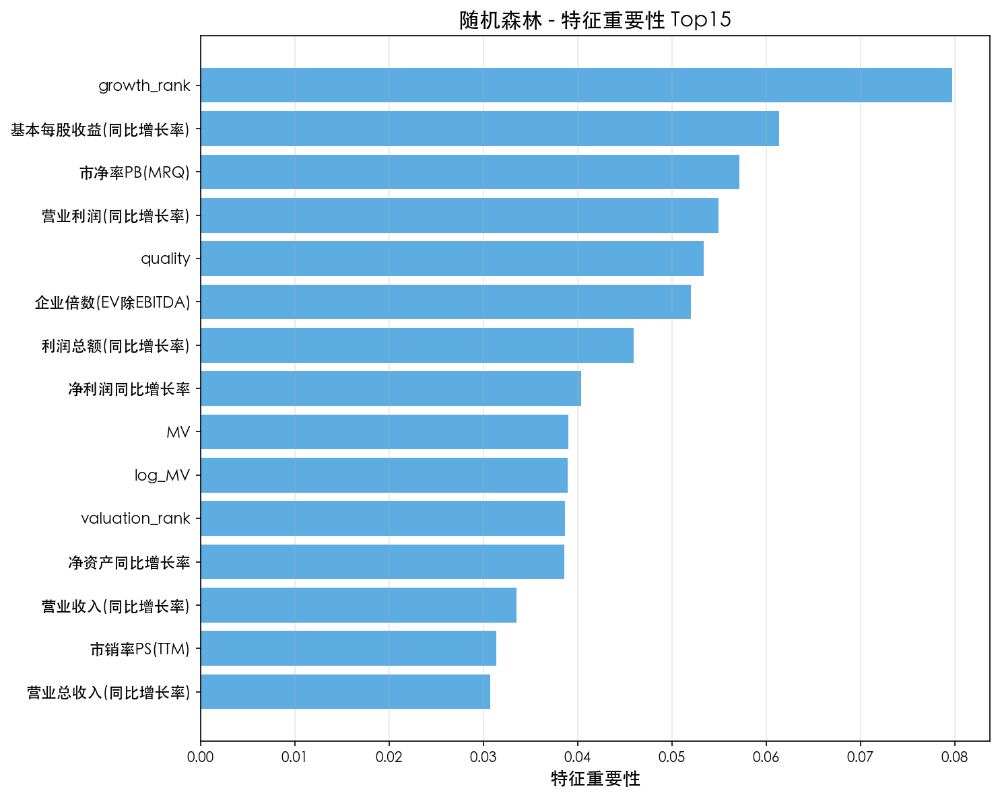
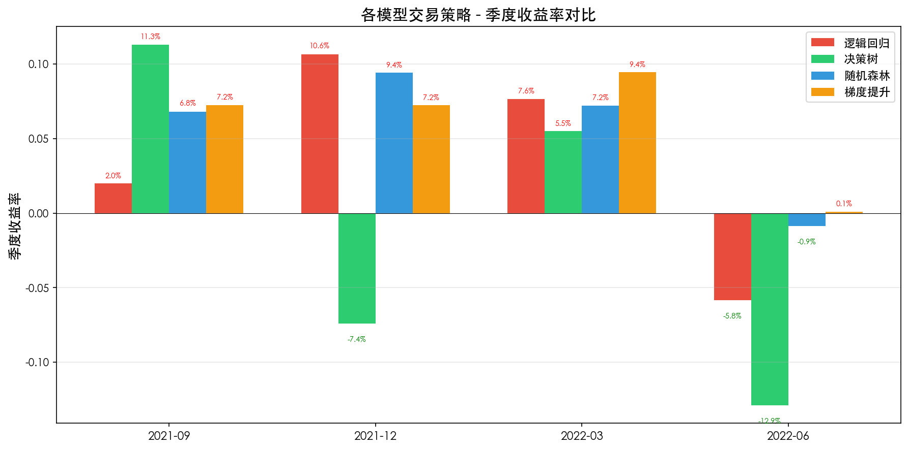
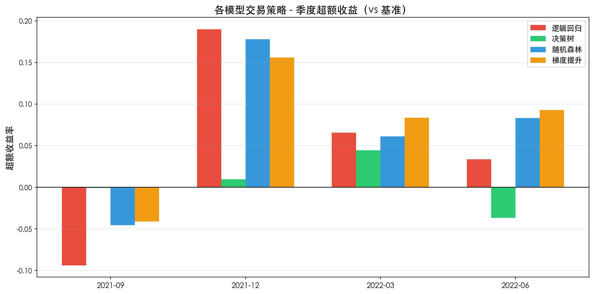
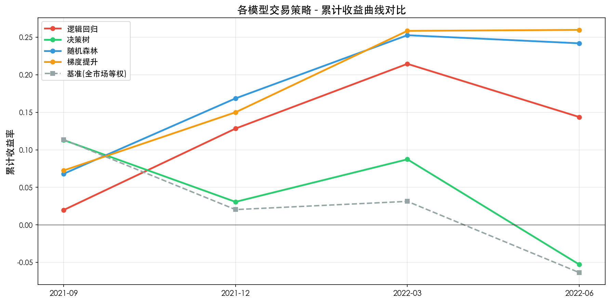
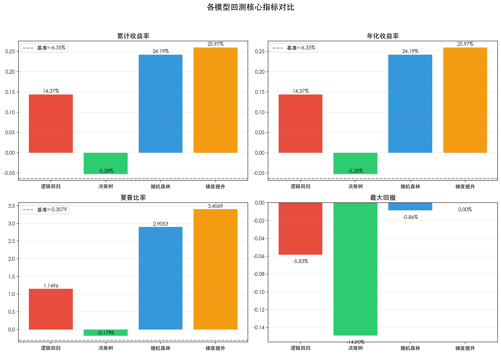
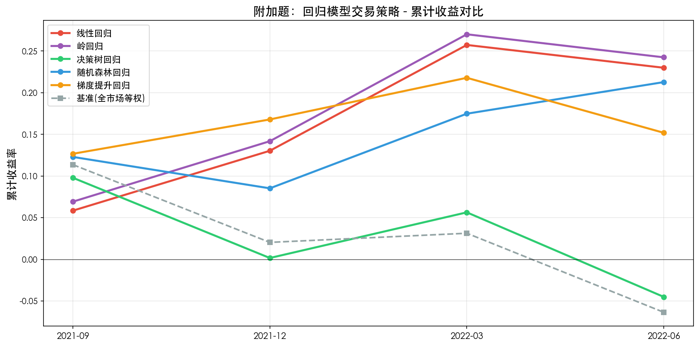
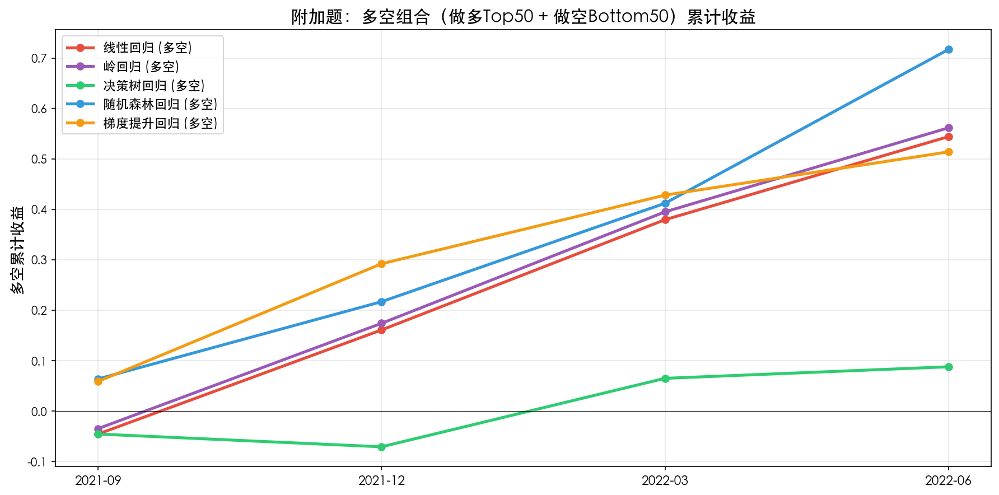
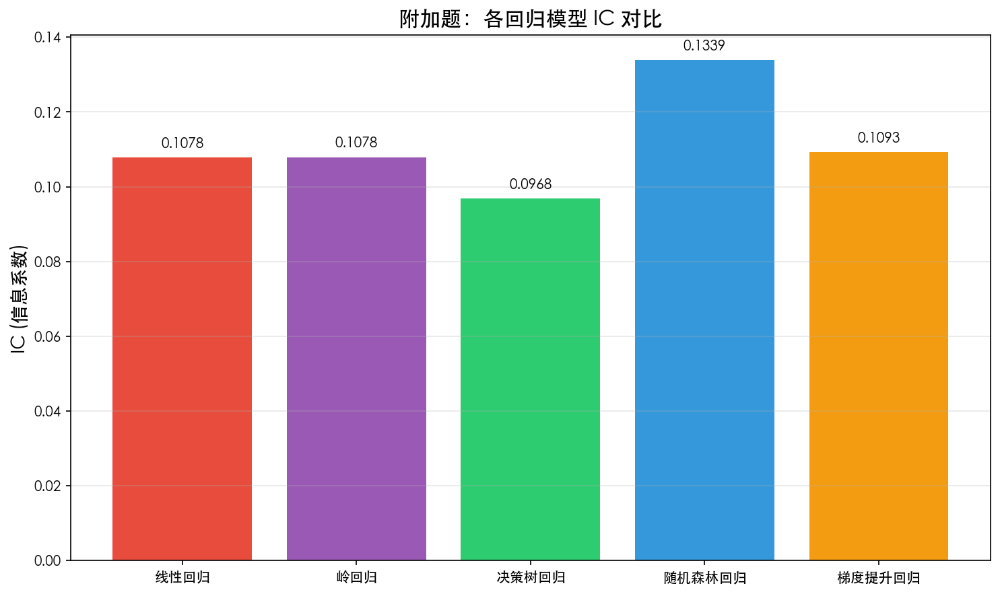

量化策略课程 · TASK6 报告 · 基于 4281 只 A 股 10 个季度的财务与收益数据
基于机器学习模型的交易策略（ML-Based Trading Strategy）是一类将监督学习、无监督学习或强化学习算法应用于金融市场，旨在从历史数据中自动学习"特征—未来收益"或"特征—市场状态"之间复杂非线性映射的量化交易范式。其核心理念可概括为三个关键假设和四步工作流。
量化交易中常见的自变量因子按数据来源可分为基本面、价量、情绪、另类四大类。下表列举了最常用的因子类别：
| 类别 | 因子示例 | 计算/含义 | 投资逻辑 |
|---|---|---|---|
| 估值因子 (Value) |
市盈率 PE (TTM) | 股价 / 每股收益 | 低 PE 股票长期跑赢 |
| 市净率 PB (MRQ) | 股价 / 每股净资产 | 破净股具有安全边际 | |
| 市销率 PS | 市值 / 营业收入 | 适合亏损公司估值 | |
| 企业倍数 EV/EBITDA | 企业价值 / 息税折旧摊销前利润 | 跨资本结构可比 | |
| 股息率 | 每股分红 / 股价 | 高股息稳健回报 | |
| 成长因子 (Growth) |
净利润同比增长率 | (本期-上期)净利润 / 上期 | 盈利高增长带来股价弹性 |
| 营业总收入同比增长率 | 同上口径 | 反映规模扩张能力 | |
| EPS 同比增长率 | 每股收益同比变化 | 直接关联每股价值 | |
| 净资产同比增长率 | 股东权益积累速度 | 资本内生能力 | |
| 规模因子 (Size) |
市值 MV | 股价 × 总股本 | 小盘股长期溢价 |
| 流通市值 | 可流通部分市值 | 流动性与可投资性 | |
| 对数市值 log(MV) | 对数变换后更稳健 | 消除量纲影响 | |
| 动量/反转 (Momentum) |
N 月动量 | 过去 N 月累计收益 | 趋势延续效应 |
| 换手率 | 成交量 / 流通股本 | 反映交易活跃度 | |
| 波动率 | 收益标准差 | 高波动 ≠ 高收益 | |
| 质量因子 (Quality) |
ROE / ROA / ROIC | 盈利能力指标 | 高质量公司抗跌 |
| 资产负债率 | 总负债 / 总资产 | 财务健康度 |
应变量（标签）的设计直接决定了模型的学习目标。常用设计方式如下：
| 类型 | 定义 | 优点 | 适用场景 |
|---|---|---|---|
| 回归型 | Y = 下期收益率（连续值） | 信息保留完整，便于排序 | 需要精确预测收益大小的策略 |
| 二分类 | Y = 1(Next_Ret > 截面中位数/0) | 忽略极端值，关注相对排名 | 截面选股、多空对冲 |
| 三分类 | Y = {涨/平/跌} 或 {Top/Mid/Bot} | 捕捉非线性收益分布 | 市场风格多变的均衡市 |
| 多分类（行业超额） | Y = 跑赢行业的相对收益排名 | 剥离行业 beta，纯 alpha | 行业中性策略 |
Y = 1 if Next_Ret > 季度截面中位数（约 50% 正样本，平衡的二分类问题）本部分基于 /Users/wangyanfen/Downloads/model_data.csv（39,616 条样本，10 个季度，4281 只 A 股）完整实现 ML 交易策略的六大步骤。
数据包含 19 个财务/估值因子 + 1 个目标变量 Next_Ret（下期收益率）。原始数据已无缺失值和无穷值。
# 加载数据并按 (Date, Code) 排序 df = pd.read_csv('/Users/wangyanfen/Downloads/model_data.csv') df['Date'] = pd.to_datetime(df['Date'], format='%Y/%m/%d') df = df.sort_values(['Date', 'Code']).reset_index(drop=True) print(df.shape) # (39616, 22)
| 特征名 | 构造方法 | 经济学含义 |
|---|---|---|
valuation_rank | PE/PB/PS 截面排名均值 | 估值越低排名越靠前，价值因子综合 |
growth_rank | 8 个成长率因子排名均值 | 成长性综合排名 |
quality | 净利润增长率 − 总资产增长率 | ROE 改善（盈利增速 vs 资产扩张速度） |
log_MV | log(1 + MV) | 对数市值，弱化极端值影响 |
pe_pb_diff | PE − PB | PE/PB 偏离度，反映估值结构 |
growth_stability | 成长率均值 / 标准差 | 成长稳定性（类信息比率） |
cashflow_quality | 经营现金流增长率 − 净利润增长率 | 盈利质量（现金 vs 利润） |
# 应变量：下期收益是否跑赢季度截面中位数 df['ret_median'] = df.groupby('Date')['Next_Ret'].transform('median') df['Y'] = (df['Next_Ret'] > df['ret_median']).astype(int) # 50.02% 正样本，49.98% 负样本 — 完美平衡
经过特征工程，最终输入模型的特征共 26 个（19 原始 + 7 衍生）。
为了避免前视偏差，采用按时间切分的方式，而非随机划分：
构建并训练 4 个对比模型：
| 模型 | 关键参数 | 适用场景 |
|---|---|---|
| 逻辑回归 | max_iter=2000, C=1.0 | 线性可解释基线 |
| 决策树 | max_depth=6, min_samples_leaf=50 | 单棵树可解释 |
| 随机森林 | n_estimators=200, max_depth=10 | Bagging 集成，稳健 |
| 梯度提升 | n_estimators=150, lr=0.1, max_depth=5 | Boosting 集成，精度高 |


关键发现：梯度提升和随机森林在 AUC 上表现最佳（0.5963 / 0.6036），明显优于决策树（0.5805）和逻辑回归（0.5835）。所有模型均显著高于 0.5 随机基线，说明财务因子中确实存在可学习的预测信号。

策略规则：
| 季度 | 逻辑回归 | 决策树 | 随机森林 | 梯度提升 | 基准 |
|---|---|---|---|---|---|
| 2021-Q3 | 1.98% | 11.31% | 6.80% | 7.25% | 11.36% |
| 2021-Q4 | 10.64% | -7.40% | 9.40% | 7.23% | -8.37% |
| 2022-Q1 | 7.64% | 5.50% | 7.20% | 9.44% | 1.07% |
| 2022-Q2 | -5.83% | -12.89% | -0.86% | 0.10% | -9.20% |


| 模型 | 累计收益 | 年化收益 | 夏普比率 | 最大回撤 | 胜率 | 超额夏普 |
|---|---|---|---|---|---|---|
| 逻辑回归 | 14.37% | 14.37% | 1.1496 | -5.83% | 75.00% | 0.9680 |
| 决策树 | -5.28% | -5.28% | -0.1798 | -14.90% | 50.00% | 0.2854 |
| 随机森林 | 24.19% | 24.19% | 2.9053 | -0.86% | 75.00% | 1.7432 |
| 梯度提升 | 25.97% | 25.97% | 3.4069 | 0.00% | 75.00% | 2.0388 |
| 基准(等权) | -6.35% | -6.35% | -0.3079 | - | - | - |


| 排名 | 模型 | AUC | 累计收益 | 夏普 | 综合评价 |
|---|---|---|---|---|---|
| 🥇 1 | 梯度提升 | 0.5963 | 25.97% | 3.41 | 样本内外均优，集成优势凸显 |
| 🥈 2 | 随机森林 | 0.6036 | 24.19% | 2.91 | AUC 最高，但策略收益略低于 GB |
| 🥉 3 | 逻辑回归 | 0.5835 | 14.37% | 1.15 | 稳健但线性假设限制表现 |
| 4 | 决策树 | 0.5805 | -5.28% | -0.18 | 单棵树过拟合，OOS 失效 |
为对比分类与回归方法的差异，附加题用 5 个回归模型直接预测 Next_Ret，并基于预测值排序构建等权多头组合 + 多空对冲组合。
| 模型 | MSE | R² | IC | 累计收益 | 年化收益 | 夏普 | 最大回撤 | 胜率 |
|---|---|---|---|---|---|---|---|---|
| 线性回归 | 0.0581 | -0.0868 | 0.1078 | 22.99% | 22.99% | 2.24 | -2.18% | 75% |
| 岭回归 | 0.0581 | -0.0868 | 0.1078 | 24.24% | 24.24% | 2.33 | -2.18% | 75% |
| 决策树回归 | 0.0583 | -0.0906 | 0.0968 | -4.51% | -4.51% | -0.18 | -13.02% | 25% |
| 随机森林回归 | 0.0564 | -0.0553 | 0.1339 | 21.27% | 21.27% | 1.75 | -3.35% | 100% |
| 梯度提升回归 | 0.0584 | -0.0923 | 0.1093 | 15.19% | 15.19% | 1.19 | -5.42% | 100% |



| 类别 | 文件 | 说明 |
|---|---|---|
| 代码 | ml_trading_strategy.py | 完整可执行的 Python 脚本 |
| 报告 | 报告.html | 本报告 |
| 数据 | backtest_metrics.csv | 回测核心指标汇总 |
| 图表 | cumulative_returns.png | 分类模型累计收益曲线 |
quarterly_returns.png | 分类模型季度收益柱状图 | |
excess_returns.png | 分类模型超额收益 | |
model_metrics.png | 分类模型评估指标对比 | |
roc_curves.png | 分类模型 ROC 曲线 | |
backtest_metrics.png | 回测核心指标四象限对比 | |
feature_importance.png | 随机森林特征重要性 Top15 | |
| 附加题 | bonus_regression_returns.png | 回归模型累计收益 |
bonus_long_short.png | 多空组合累计收益 | |
bonus_ic_compare.png | IC 信息系数对比 |